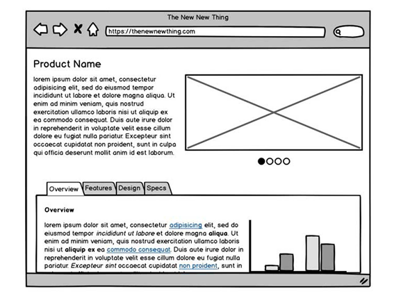
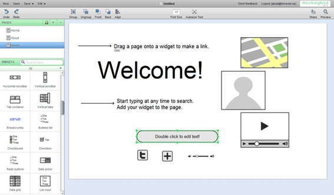
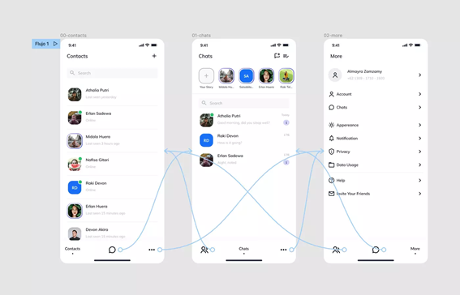
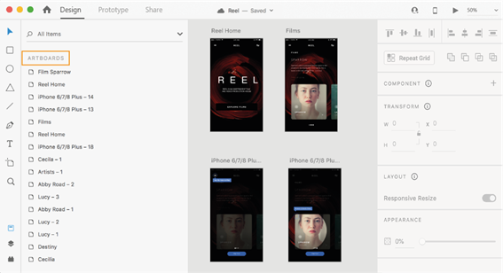
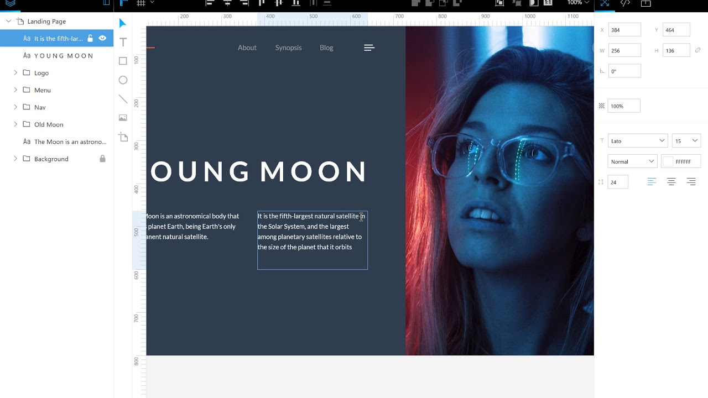

Una herramienta propietaria es aquella que para ser utilizada es necesario o recomendable pagar, ya sea mensualmente, anualmente o un único pago, y cuyo acceso al código fuente es libre.
Entre las herramientas propietarias de edición de interfaces existen las siguientes:
Balsamiq es un programa de escritorio dedicado a la creación de wireframes y cuyo estilo artístico es similar a los dibujos a mano. Ofrece una gran variedad de elementos prediseñados, como barras de estado, menús y barras de progreso y permite colocar los elementos arrastrando y soltando. El diseño puede ser exportado en PDF o PNG. Es una herramienta multiplataforma y puede ser utilizada desde cualquier dispositivo.
Este software no necesita ser instalado y es un buen programa para que los usuarios que no tengan experiencia puedan crear sus wireframes. Ofrece una selección de 90 módulos y componentes diferentes. La ventaja de esta aplicación es que tiene diseños interactivos que permiten revisar el flujo de trabajo, probar la usabilidad desde la perspectiva del usuario y compartir el trabajo realizado con el cliente. Pese a que ofrece tres proyectos gratis, esta herramienta es de pago. No es posible guardar y exportar el trabajo en la prueba gratuita.
Este software alojado en la web hace posible la colaboración en tiempo real de todos los miembros del equipo. Tiene herramientas para ilustrar y crear prototipos. Además de tener un gran número de opciones y funcionalidades, también tiene plugins para ampliar aún más su uso. Aunque es un programa de pago, tiene una versión gratuita.
Adobe XD es un software que sirve para crear y compartir interfaces, tanto páginas web como aplicaciones móviles. Es una herramienta que requiere ser usuario de la suite de programas de Adobe. Al formar parte de Creative Cloud, no ocupará mucho espacio en el disco.
Una herramienta libre es aquella cuyo código fuente está abierto al público para ser estudiado, modificado o distribuido. Son herramientas gratuitas al alcance de cualquiera.
Entre las herramientas libres de edición de interfaces existen las siguientes:
Lunacy es un software gratuito de diseño de interfaces con elementos familiares de otras aplicaciones de este tipo. La aplicación contiene una gran variedad de iconos, ilustraciones y fotos.
Tiene eliminación automática de fondos, mejoras de imagen, avatar y generadores de texto. Es posible colaborar en línea. La aplicación funciona para todas las plataformas.
La mayoría de sus funciones funcionan sin conexión a internet.
